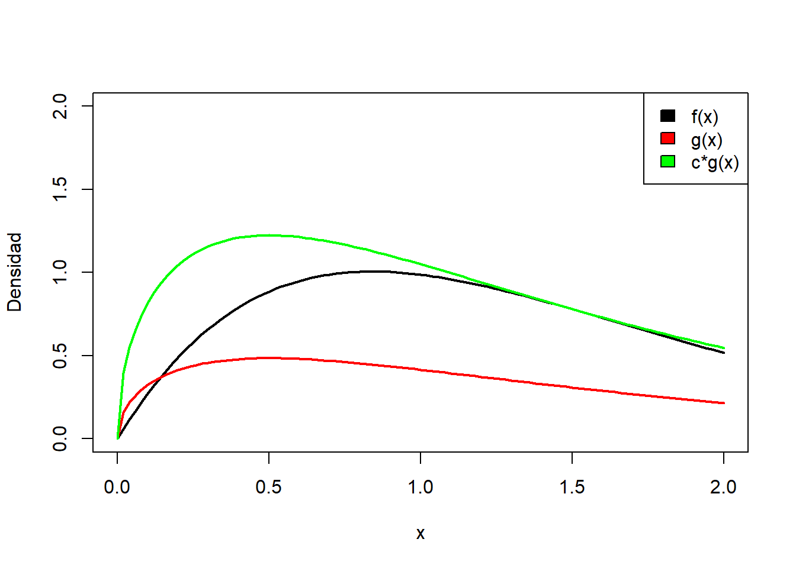
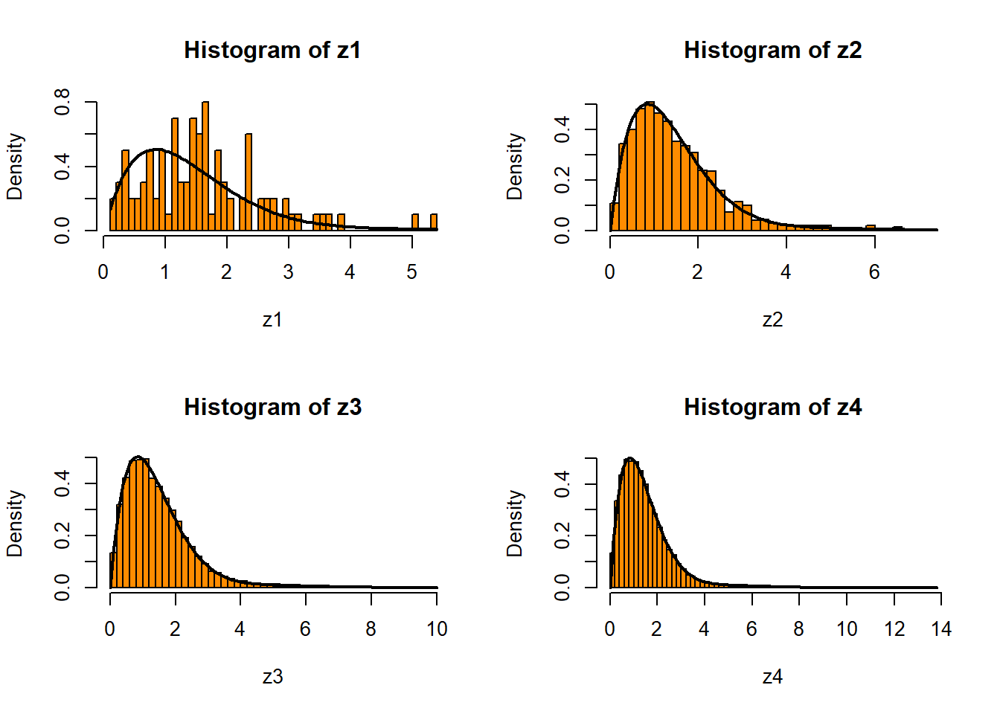
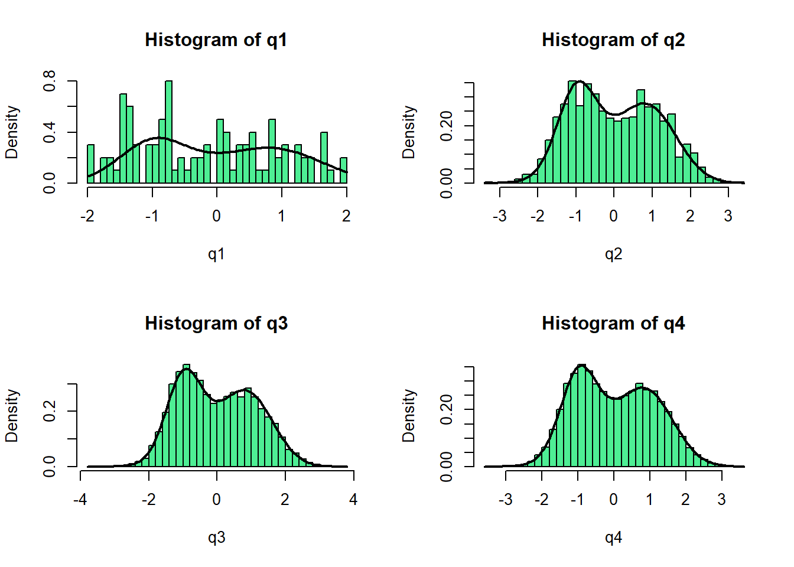
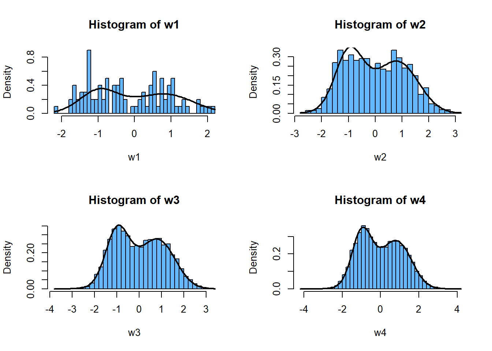
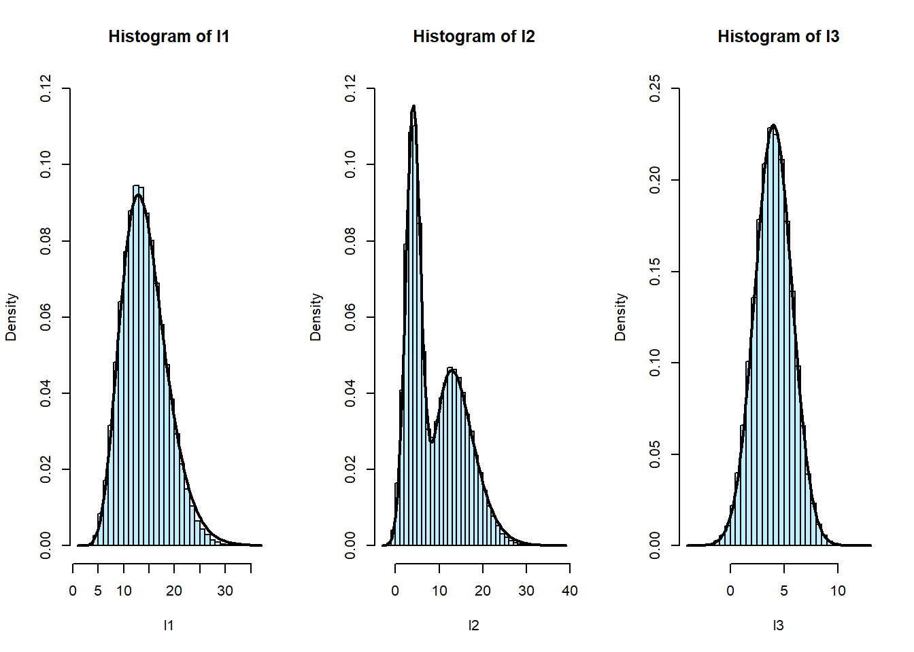

f <- function(x){
y <- (x+2*sin(x))/exp(x)
return(y)
}
curve(f,from = 0,to= 2)Tarea 2 simulación estocastica
Pregunta 1.
a)
b)
Se propone como distibucion generadora de candidatos la gamma(3/2,1).
Se definen las funciones g y h para encontrar el valor de c
g <- function(x){
y <- dgamma(x,shape=3/2, rate = 1)
return(y)
}
h <- function(x){
y <- f(x)/dgamma(x,shape=3/2, rate = 1)
return(y)
}
max <- optimize(h,interval = c(0,2),maximum = T)
c <- h(max$maximum)
c[1] 2.529105El valor de c es aproximadamente 2,529
c)
curve(f,from = 0,to= 2, col="black", lwd=2, ylim=c(0,2), ylab = "Densidad")
curve(g ,from = 0,to= 2, col="red", lwd=2, add = T)
curve(g(x)*c ,from = 0,to= 2, col="green", lwd=2, add = T)
legend("topright", legend = c("f(x)","g(x)", "c*g(x)"), fill = c("black", "red", "green"))
d)
Se usan dos funciones aparte para crear la ultima funcion que entrega lo pedido
#funcion que simula distribucion usando el metodo aceptacion-rechazo
acept_rech <- function(n,c){
aceptados <- 0
rechazados <- 0
simulaciones <- c()
while(length(simulaciones)<n){
y <- rgamma(1,shape = 3/2, rate = 1)
u <- runif(1)
if (u<=(1/c)*(f(y)/dgamma(y,shape = 3/2, rate = 1))){
aceptados <- aceptados+1
simulaciones <- c(simulaciones,y)
}else{
rechazados <- rechazados+1
}
}
tasa_a <- aceptados/(aceptados+rechazados)
return(list(muestra=simulaciones,tasa_aprobacion=tasa_a))
}
#funcion que retorna la constante de normalizacion
cte.norm <- function(N){
m <- c()
for (i in 1:N){
m = c(m,1/(acept_rech(100, c)$tasa_aprobacion * c))
}
M <- mean(m)
return(M)
}
#se define la funcion "fin" que entrega todo lo pedido en el enunciado
fin <- function(N){
a <- acept_rech(N,c)
b <- cte.norm(N)
return(list(muestra=a$muestra, tasa_acep=a$tasa_aprobacion, cte_normalizacion=b))
}e)
z1 <- fin(100)$muestra
z2 <- fin(1000)$muestra
z3 <- fin(10000)$muestra
z4 <- fin(20000)$muestra
par(mfrow=c(2,2))
hist(z1, probability = T, breaks = 50, col="#FF8C00")
curve(f(x)*fin(100)$cte_normalizacion ,add = T,lwd=2)
hist(z2, probability = T, breaks = 50,col="#FF8C00")
curve(f(x)*fin(1000)$cte_normalizacion ,add = T,lwd=2)
hist(z3, probability = T, breaks = 50,col="#FF8C00")
curve(f(x)*fin(10000)$cte_normalizacion ,add = T,lwd=2)
hist(z4, probability = T, breaks = 50,col="#FF8C00")
curve(f(x)*fin(20000)$cte_normalizacion ,add = T,lwd=2)
Pregunta 2.
a)
f2 <- function(x){
y <- (1/3)*dnorm(x,-1,1/2)+(1/3)*dnorm(x,0,1)+(1/3)*dnorm(x,1,sqrt(1/2))
return(y)
}
curve(f2, col="red", lwd=2, xlim = c(-1,1), ylim=c(0,0.8))
curve(dnorm(x,-1,1/2) ,add = T, col="blue")
curve(dnorm(x,0,1) ,add = T, col="blue")
curve(dnorm(x,1,sqrt(1/2)) ,add = T, col="blue")b)
se realiza la funcion usando el metodo polar, entrega una distribucion normal estandar
#esta funcion entrega una distribucion normal(0,1)
metodo.polar <- function(N)
{
X <- NULL
u1<-runif(N,0,1)
u2 <- runif(N,0,1)
v1 <- 2*u1 - 1
v2 <- 2*u2 - 1
S <- v1^2 + v2^2
for (j in 1:N){
while(S[j]>1)
{
u1<-runif(N,0,1)
u2 <- runif(N,0,1)
v1 <- 2*u1 - 1
v2 <- 2*u2 - 1
S <- v1^2 + v2^2
}
X[j] <- sqrt(-2*log(S[j])/S[j])*v1[j]
}
return(X)
}
#se realiza otra funcion que entrega una muestra de la funcion que se quieres simular, usando metodo polar
muestra.polar <- function(N){
k <- NULL
for (i in 1:N){
u <- runif(1)
if (u<1/3){
k[i] <- (1/2)*metodo.polar(1)-1
}
if (u<2/3 && u>1/3){
k[i] <- metodo.polar(1)
}
if (u>2/3){
k[i] <- metodo.polar(1)*sqrt(1/2)+1
}
}
return(k)
}c)
q1 <- muestra.polar(100)
q2 <- muestra.polar(1000)
q3 <- muestra.polar(10000)
q4 <- muestra.polar(20000)
par(mfrow=c(2,2))
hist(q1, probability = T, breaks = 40, col = "seagreen2")
curve(f2 ,add = T, lwd=2)
hist(q2, probability = T, breaks = 40, col = "seagreen2")
curve(f2 ,add = T, lwd=2)
hist(q3, probability = T, breaks = 40, col = "seagreen2")
curve(f2 ,add = T, lwd=2)
hist(q4, probability = T, breaks = 40, col = "seagreen2")
curve(f2 ,add = T, lwd=2)
d)
#esta funcione entrega una muestra que distribuye normal(0,1)
box.muller <- function(N)
{
u <- runif(N,0,1)
v <- runif(N)
theta <- 2*pi*v
r <- sqrt(-2*log(1-u))
X <- r*cos(theta)
return(X)
}
#se construye funcion que entrega muestras de la funcion que se quieres simular usando la transformacion box-muller
muestra.muller <- function(N){
k <- NULL
for (i in 1:N){
u <- runif(1)
if (u<1/3){
k[i] <- (1/2)*box.muller(1)-1
}
if (u<2/3 && u>1/3){
k[i] <- box.muller(1)
}
if (u>2/3){
k[i] <- box.muller(1)*sqrt(1/2)+1
}
}
return(k)
}e)
w1 <- muestra.muller(100)
w2 <- muestra.muller(1000)
w3 <- muestra.muller(10000)
w4 <- muestra.muller(20000)
par(mfrow=c(2,2))
hist(w1, probability = T, col = "#63B8FF",breaks = 40)
curve(f2 ,add = T, lwd=2)
hist(w2, probability = T, col = "#63B8FF",breaks = 40)
curve(f2 ,add = T, lwd=2)
hist(w3, probability = T, col = "#63B8FF",breaks = 40)
curve(f2 ,add = T, lwd=2)
hist(w4, probability = T, col = "#63B8FF",breaks = 40)
curve(f2 ,add = T, lwd=2)
f)
Se puede apreciar que usando el metodo polar el histograma se asemeja mas a la funcion f ocupando una menor muestra, en otras palabras, el metodo polar es mas estable que la transformacion box-muller.
Pregunta 3
a)
curve(dnorm(x,4,sqrt(3)),xlim = c(0,13),ylim=c(0,0.3), col="black")
curve(dgamma(x,10,0.7),add = T,col="red")
legend("topright", legend = c("Normal","Gamma"), fill = c("black", "red"))b)
#aceptacion-rechazo para la gamma(10,0.7)
ff <- function(x){
y <- dgamma(x, shape = 10, rate = 0.7)
return(y)
}
gg <- function(x){
y <- dweibull(x, shape = 2.5, scale = 13)
return(y)
}
hh <- function(x){
y <- ff(x)/gg(x)
}
c1 <- optimize(hh, interval = c(0,20), maximum = T)
c1 <- c1$objective
c1[1] 1.70102acept_rech2 <- function(n,c1){
aceptados <- 0
rechazados <- 0
simulaciones <- c()
while(length(simulaciones)<n){
y <- rweibull(1,shape=2.5,scale=13)
u <- runif(1)
if (u<=(1/c1)*(hh(y))){
aceptados <- aceptados+1
simulaciones <- c(simulaciones,y)
}else{
rechazados <- rechazados+1
}
}
tasa_a <- aceptados/(aceptados+rechazados)
return(list(muestra=simulaciones,tasa_aprobacion=tasa_a))
}
#la siguiente funcion entrega una muestra ocupando metodo de composicion
composicion <- function(N,p1){
u <- runif(N)
muestra <- NULL
for (i in 1:N) {
if(u[i] < p1){
r <- metodo.polar(1)
muestra[i] <- sqrt(3)*r+4
}
else{
b <- acept_rech2(1,c1)
muestra[i] <- b$muestra
}
}
return(muestra)
}c)
l1 <-composicion(100000,0)
l2 <-composicion(100000,0.5)
l3 <-composicion(100000,1)
f4 <- function(x,p1){
y <- p1*dnorm(x,4,sqrt(3))+ (1-p1)*dgamma(x,10,0.7)
return(y)
}
par(mfrow=c(1,3))
hist(l1, probability = T,ylim=c(0,0.12),breaks = 40, col = "lightblue1")
curve(f4(x,0) ,add = T, lwd=2)
hist(l2, probability = T,ylim=c(0,0.12), breaks = 50, col = "lightblue1")
curve(f4(x,0.5),add = T, lwd=2)
hist(l3, probability = T,ylim=c(0,0.25), breaks = 40, col = "lightblue1")
curve(f4(x,1) ,add = T, lwd=2)
d)
#esta funcion ocupa las funciones que estan incorporadas en R
composicion2 <- function(N,p1){
u <- runif(N)
u1 <- runif(N)
muestra <- NULL
for (i in 1:N) {
if(u[i] < p1){
muestra[i] <- rnorm(1,4,sqrt(3))
}
else{
muestra[i] <- rgamma(1,10,0.7)
}
}
return(muestra)
}
par(mfrow=c(1,3))
hist(composicion2(100000,0), probability=T, breaks=40, col="#00FFFF")
curve(f4(x,0) ,add = T, lwd=2)
hist(composicion2(100000,0.5), probability=T, breaks=50, col="#00FFFF")
curve(f4(x,0.5) ,add = T, lwd=2)
hist(composicion2(100000,1), probability=T, breaks = 40, col="#00FFFF")
curve(f4(x,1) ,add = T, lwd=2)